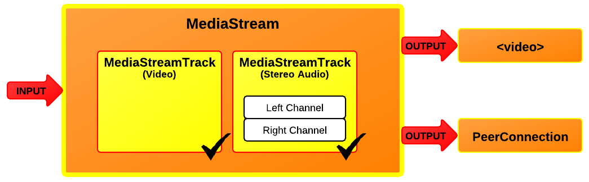

Tomasz Rzeźnik
"WebRTC co, jak z czym" PL
2017-05-09
What is WebRTC
A set of JavaScript APIs in the browser to enable peer-to-peer, real-time media and data exchange.
What does WebRTC provide?
- Open Source, no royalties, license fees
- Real-time flexible voice, video and data framework in cross platform
- Standard Web APIs Interoperable between browsers
- No Proprietary plug-in
- Security
WebRTC across platforms
Supported browsers & platforms

Chrome

iOS
Not supported

IE

Safari
Supported in a different way

Edge
Three main RTC components
- MediaStream
- RTCPeerConnection
- RTCDataChannel
MediaStream (aka getUserMedia)

Abstract Signaling
- Need to exchange "session descriptop" objects:
- What formats I support, what I want to send
- Network information for peer-to-peer setup
- Can use any messaging mechanism
- Can use any messaging protocal